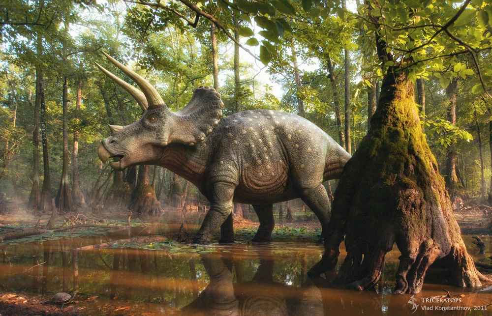

Про трицератопса
- Зріст: 2,9 – 3 м
- Маса: 6 000 – 12 000 кг
- Научна назва: Triceratops
- Довжина: 7,9 – 9 м
- Швидкість: 32 км/ч (Maximum)
- Період зникнення скам'янілостей: Маастрихтський ярус
- Вища класифікація: Triceratopsini

Трицера́топс (Triceratops) — рід викопних травоїдних динозаврів з групи рогатих динозаврів (Ceratopsia). Жили в кінці періоду пізньої крейди (67-65 мільйонів років тому) в Північній Америці. Довжина трицератопсів досягала 9 м, маса динозавра становила до 12 тонн. Це були найбільші та одні з найпізніших цератопсів. Рід містить два види: Triceratops horridus і Triceratops prorsus.Загальна будова Трицератопси були великими тваринами, що пересувалися на чотирьох ногах. Досягали завдовжки від 7,9 до 9 м, і 2,9-3 м заввишки[1][2]. Маса складала 6,1-12 тонн[3]. Велика голова мала три роги: один короткий над ротом і два довгих над кожним оком. За рогами містився виступ у вигляді коміра, що прикривав шию згори[4]. Будова шкіри трицератопса відома за скам'янілим зразком з Вайомінгу, хоча офіційно він не був висвітлений у науковій літературі. Шкіру покривали шестикутні вузлики завширшки близько 5–6 см, а також більші, близько 10 см горбки з конічними виступами[5]. Якщо треба більше інформації натисніть на картинку.